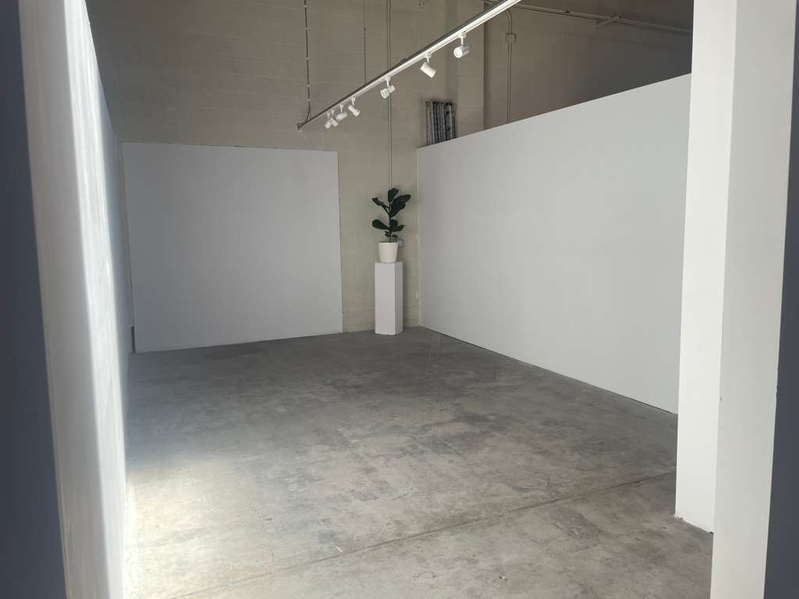

Rebecca Martinez
Founder & Director
A contemporary art space dedicated to community, creativity, and cultural dialogue
Orchard Galleries exists at the intersection of art and community. We believe that contemporary art has the power to inspire, challenge, and unite people from all walks of life. Our mission is to provide a welcoming platform where emerging and established artists can share their visions, where visitors can discover new perspectives, and where meaningful conversations about art, culture, and society can flourish.
We are committed to showcasing the extraordinary diversity and creativity of Bay Area artists while making contemporary art accessible and engaging for everyone in our community.

Founded in 2018, Orchard Galleries emerged from a passionate belief that Oakland needed a contemporary art space that truly reflected the city's creative spirit and cultural diversity. What began as a single exhibition space has grown into a thriving arts hub featuring 12 distinct showrooms.
Located in Oakland's renowned Art Murmur District, we've become an integral part of the neighborhood's vibrant cultural ecosystem. Our galleries have hosted hundreds of exhibitions, welcomed thousands of visitors, and supported countless artists in their creative journeys.
The name "Orchard" reflects our vision of growth, cultivation, and abundance—values that guide everything we do. Like an orchard, we nurture artistic talent, provide fertile ground for creative expression, and offer our community the fruits of artistic innovation.
At Orchard Galleries, we believe art should be experienced, not just observed. Our curatorial approach emphasizes immersive, thought-provoking exhibitions that invite active engagement rather than passive viewing.
We champion artistic experimentation and take risks on emerging voices alongside celebrated established artists. Our programming deliberately blurs the boundaries between disciplines, bringing together painting, sculpture, installation, photography, digital media, and performance art.
Accessibility is central to our philosophy. We strive to create an environment where everyone feels welcome to explore contemporary art, regardless of their background or familiarity with the art world. Through artist talks, workshops, and community events, we break down barriers and foster genuine connections between artists and audiences.
Orchard Galleries is more than an exhibition space—we're a community gathering place committed to positive social impact. Our programming serves diverse audiences and reflects Oakland's multicultural character.
We partner with local schools to provide art education programming, offering students hands-on workshops with professional artists and free guided tours of our exhibitions.
Through our open studio program, emerging artists gain access to exhibition space, professional development resources, and connections with collectors and curators. We're invested in the long-term success of the artists we work with.
Our event calendar includes artist talks, panel discussions, film screenings, performances, and cultural celebrations that bring the community together around shared creative experiences.
As an active participant in Oakland's Art Murmur District, we collaborate with neighboring galleries, studios, and cultural organizations to strengthen the local arts ecosystem. On First Friday each month, we join dozens of venues in opening our doors for a neighborhood-wide celebration of art and community.

Orchard Galleries occupies a beautifully renovated 15,000 square foot building featuring 12 distinct exhibition showrooms. Each gallery space is designed to complement the artwork it houses, with high ceilings, natural light, and flexible configurations that allow for diverse installation approaches.
Our main gallery accommodates large-scale installations and major exhibitions. Additional showrooms provide intimate settings for focused displays and experimental projects. A central gathering area serves as a hub for events, discussions, and casual encounters between artists and visitors.
The building's industrial heritage—exposed brick, wooden beams, concrete floors—creates an authentic backdrop that honors Oakland's working-class roots while providing a sophisticated setting for contemporary art.
Founder & Director

Chief Curator

Education Director

Programs Coordinator
We invite you to visit our galleries and experience contemporary art in an intimate, welcoming environment. Whether you're an avid collector, a curious newcomer, or simply looking for inspiration, you'll find something meaningful at Orchard Galleries.
Plan Your Visit